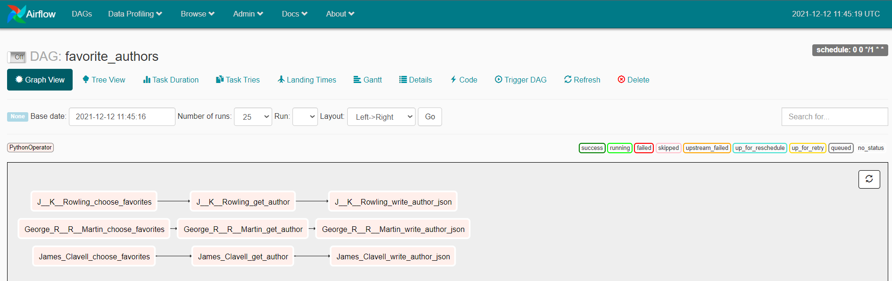
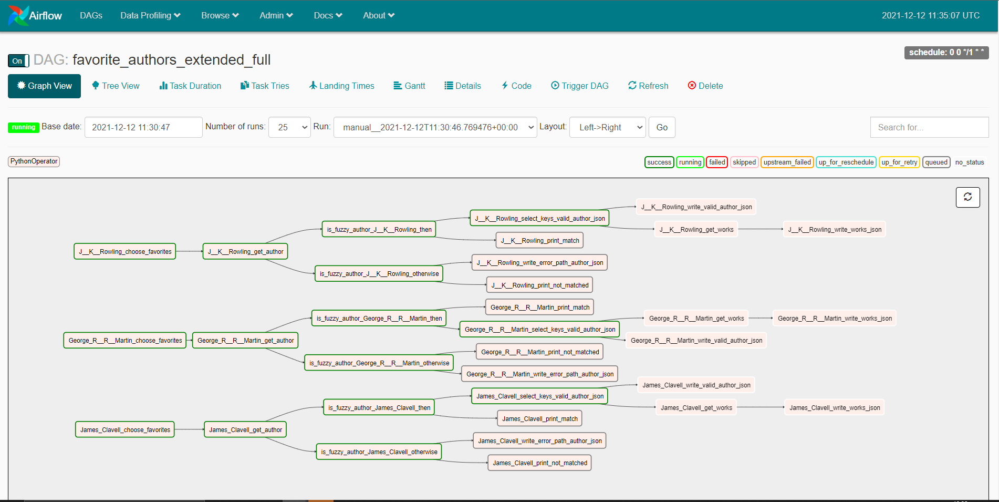

Write Airflow DAGS faster 
Write Serverless AWS Lambda DAGS faster
Make creating reliable data pipelines easy for the whole team 
Simplicity and re-usability; a toolkit designed to be loved by Data Engineers 
Deploying to your existing Airflow with zero risk and no migration work 
Workflow: Typhoon YAML DAG --> transpile --> Airflow DAG
- Elegant: YAML; low-code and easy to pick up.
- Data sharing - data flows between tasks making it intuitive and easy to build tasks.
- Composability - Functions combine like Lego. Effortless to extend for more sources and connections.
- Components - reduce complex tasks (e.g. CSV→S3→Snowflake) to 1 re-usable task.
- UI: Component UI for sharing DAG configuration with your DWH, Analyst or Data Sci. teams.
- Rich Cli: Inspired by other great command line interfaces and instantly familiar. Intelligent bash/zsh completion.
- Testable Tasks - automate DAG task tests.
- Testable Python - test functions or full DAGs with PyTest.
- Flexible deployment: deploy to Airflow - large reduction in effort, without breaking existing production.
- Pristine: Pre-built (OSS) components and UI that can be shared to your team
- Core: Python (OSS) core
- Extensible and hackable.
- Components allow you to share extensions widely in the Pristine layer
Example DAG
1 2 3 4 5 6 7 8 9 10 11 12 13 14 15 16 17 18 19 20 21 22 23 24 25 26 27 28 29 30 | |
1 2 3 4 5 6 7 8 9 10 11 12 13 14 15 16 17 18 19 20 21 22 23 24 25 26 27 28 29 30 31 32 33 34 35 36 37 38 39 40 41 42 43 44 45 46 47 48 49 50 51 52 53 54 55 56 57 58 59 60 61 62 | |
Using with Airflow
First, read our installation docs to get going with airflow + docker (10 mins).
Building the above DAG using
docker-compose -f docker-compose-af.yml run --rm typhoon-af typhoon dag build --all
docker restart typhoon-af

We can extend the above task to give an example with more complexity. The tutorial for this has some more advanced tips. The airflow compiled DAG handles complex DAG structures very nicely:

Auto-Completion

Quick start with VS Code.
If you want the dag schema and the component schema to be generated after every change to your code (functions, transformations and connections) you need to:
-
install the extension
Run on Saveby emeraldwalk and edit the path to your typhoon executable ingenerate_schemas.sh. You can find out the path by running the following command in the terminal:which typhoon. -
install the extension
YAMLby redhat.
Component UI
The Component UI is a dynamic UI (Streamlit app) based on a Component DAG. This means you can make a component and your team can then generate specific DAGs from this template.
e.g. DB -> S3 -> Snowflake. They can then use this for any relational DB to export tables to Snowflake.

Cli, Testing & Shell
The rich CLI should be instantly familiar to most users. Help is provided as you navigate with --help as well as auto-complete with most terminals.
Built in tests allow another level of robustness and automation and are easy and quick to make.

The Interactive Shell is really useful for running tasks and understanding the data structure at each point. Here is a short demo of running the get_author task and seeing the data it returns which can then be explored.